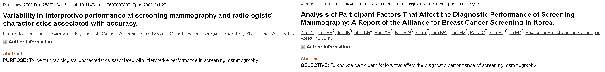

Redes neurais convolucionais: Um classificador para diagnóstico de câncer de mama.
Gabriela Borges
Prof. Dr. Ricardo Rocha
Sumário
- Introdução
- Aprendizado de máquina
- Redes neurais artificiais
- Conceitos gerais
- Estudo de caso: Wisconsin Dataset
- Redes neurais c
onvolucionais
- Conceitos gerais
- Estudo de caso: MIAS Dataset
- Conclusão
Introdução
O diagnóstico médico é o processo analítico de um exame ou quadro clínico para chegada de uma conclusão.
Dados sobre diagnósticos corretos estão sendo frequentemente disponibilizados na forma de registros médicos (Igor, 2001 ).
O uso de imagens para diagnóstico continua sendo “padrão ouro” para várias doenças, incluindo quase todos os tipos de câncer (Xu et al, 2016 ).
Em particular, o câncer de mama tem um quadro assintomático que pode ser detectado com mamografia e, portanto a mamografia é o principal exame para triagem.
A interpretação humana é afetada pela fadiga e subjetividade e pode gerar diagnósticos errados (Greenspan, 2016 ).

Com os avanços no processamento de imagens, reconhecimento de padrões e aprendizado de máquina tem sido possível melhorar o diagnóstico dos radiologistas através do uso de sistemas computadorizados de diagnóstico ( Shen, 2017 ).
Aprendizado de máquina
O aprendizado de máquina (AM) consiste em técnicas baseadas em reconhecimento de padrões que, caracteriza, descreve e faz predições sobre um conjunto de dados.

| Aprendizado de máquina | Estatistiquês |
|---|---|
| Redes, algoritmos | Modelos |
| Pesos | Parâmetros |
| Treinamento | Estimação |
| Generalização | Teste de performance |
| Features | Variáveis preditoras |
| Aprendizado supervisionado | Modelos de regressão |
| Aprendizado não-supervisionado | Estimação de densidade, agrupamento, redução de dimensionalidade |
As técnicas de AM supervisionado são utilizadas quando o objetivo é caracterizar ou predizer uma variável resposta que é conhecida e está disponível no banco de dados, de acordo com variáveis preditoras.
Y = y(x, w)
Em que Y é a variável resposta, x são as variáveis preditoras, w é o vetor de pesos e y(.) é um modelo/algoritmo de aprendizado de máquina.
A escolha de técnicas de classificação ou regressão depende da natureza da variável resposta.
Classificação: Com base no histórico de crédito do cliente, decidir o aceite de um empréstimo.
Regressão: Dada a imagem de uma pessoa, predizer sua idade.
O sucesso dos algoritmos de AM depende, em parte, do grau de discriminação das variáveis preditoras. No contexto de imagens, variáveis preditoras não são um conceito "bem-definido".
A extração de características das imagens para classificação é comum, porém demanda grande esforço de pré-processamento.
Técnicas de extração de variáveis automáticas, tal como as redes neurais convolucionais, podem ser vantajosas.
Redes neurais artificiais
As redes neurais artificiais são inspiradas no comportamento dos neurônios do cerébro.
A informação agora é processada por cada camada e é passada pra próxima até a tomada de decisões.
Os tipos de neurônios se diferenciam pela função de ativação atribuídas a eles.
A adaptação dos pesos é baseada na minimização de uma função custo E(w). A função custo avalia o desempenho da rede para a tomada de decisões no conjunto de exemplos.
Os pesos são atualizados de forma que ${w_{j}^{(t+1)}} = {w_{j}^{(t)}} + \lambda \frac{\partial E(\textbf{w})}{\partial w_{j}}$.
A otimização da função custo pode ser simplificada utilizando a propriedade de decomposição das derivadas.
O processo de otimização continua até o critério de parada ou o número de epócas.
Wisconsin Dataset
O procedimento de diagnóstico utilizado começa com a extração de uma pequena quantidade de fluído do nódulo na mama usando uma agulha.
O material é então aspirado e expresso em uma lâmina de vidro e corado. A imagem para análise digital é gerada por uma câmera de vídeo colorida montada sobre o microscópio.
Dez medidas são extraídas de cada núcleo celular presente nas imagens computadorizadas.
De cada imagem foram extraídas as médias, desvio padrão e maior valores das medidas computadas sobre os núcleos das células.
O teste de Wilcoxon-Mann-Whitney foi utilizado para avaliar o grau discriminativo de cada variável (3 variáveis removidas).
A técnica de análise de componentes principais foi utilizada pra reduzir a colineariedade das variáveis.
| Número de componentes | 27 | 17 | 10 | 7 | 2 |
|---|---|---|---|---|---|
| % de variância extraída | 100 | 99 | 95 | 90 | 68 |
Em cada base de dados foram implementados os principais algoritmos de AM clássico: regressão logística, K-vizinhos mais próximos (KNN), árvore de decisão e máquina de suporte vetorial (SVM) e diferentes arquiteturas de ANN’s com até três camadas.
As arquiteturas variavam de acordo com o número de camadas e o número de neurônios em cada camada. O número máximo de neurônios em cada camada é 18 e o número mínimo é 0, aumentando de 3 em 3. Ao todo 259 arquiteturas foram testadas.
A medida que o número de componentes aumenta a acurácia das ANN's aumenta.
Os melhores resultados de desempenho preditivo dos algoritmos foram obtidos com 17 componentes.
O melhor algoritmo foi uma MLP(6,3,12) que obteve 98.4% de acurácia.
As arquiteturas de ANN's obtiveram acurácias em torno de 1.5% maiores em relação aos métodos de AM clássicos.
Redes neurais convolucionais
Computacionalmente, a informação de luz da imagem pode ser extraída através da intensidade de seus pixels.
As CNN's são extensões das ANN's para problemas de imagens já que preserva a estrutura bidimensional dos dados.
As CNN's tem como vantagem a preservação da relação entre os pixels extraindo características usando pequenas partes da imagem de entrada.
A camada convolucional é responsável por extrair características e atributos das imagens de entrada. A camada de pooling reduz a dimensionalidade dos dados.
As CNN's tem como vantagem a preservação da relação entre os pixels extraindo características usando pequenas partes da imagem de entrada.

A camada convolucional é responsável por extrair características e atributos das imagens de entrada. A camada de pooling reduz a dimensionalidade dos dados.
MIAS Dataset
MIAS é um grupo de cientistas interessados em diagnóstico de mamografias que disponibilizou uma base de dados de mamografias digitalizadas.
O banco de dados contém 322 imagens com resolução 1024x1024 além do diagnóstico verdadeiro e localização de anomalia, caso esta esteja presente.
As mamografias são classificadas de acordo com a presença e tipo de anomalia, sua gravidade, sua posição e seu raio. O presente estudo se limitou a classificação de presença de anomalia e sua gravidade.
| Status da mamografia | N |
|---|---|
| Benigno | 61 |
| Maligno | 52 |
| Normal | 209 |
As imagens originais contém bordas e elementos não desejados.